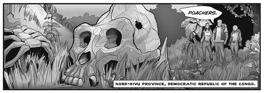

EVOKE: A Crash Course in Changing the World
改变世界的速成班
EVOKE is designed to empower young people all over the world, especially in Africa, to start actively tackling the world’s most urgent problems—poverty, hunger, sustainable energy, clean-water access, natural disaster preparation, human rights.
Dubbed as a “crash course in changing the world” and produced for the World Bank Institute, the learning arm of the World Bank, EVOKE is a social network game designed to help players launch their own world-changing venture in just ten weeks. It’s playable on computers, but it’s optimized for mobile phones—the most ubiquitous social technology in Africa.
The world of EVOKE is set ten years in the future. The story, told in the form of a graphic novel, follows the adventures of a secret superhero network based in Africa. The network is made up of “stealth social innovators,” a concept we invented for the game.

Excerpt from episode eight of EVOKE.
(Jacob Glaser, World Bank Institute, 2010)
Social innovation, of course, is a real concept—and an increasingly important method of tackling poverty worldwide. It means applying entrepreneurial ways of thinking and working to solve social problems that are ordinarily tackled by governments or by relief and aid agencies. The key principle of social innovation is that anyone, anywhere, can start their own project or business venture to try to solve a social problem. Also referred to as “social entrepreneurship,” it emphasizes taking risks, understanding the local context, and looking for breakthrough innovations, rather than applying standard, cookie-cutter solutions.
So what is stealth social innovation? In the world of EVOKE, social innovators tackle social problems with superheroic secrecy and spectacle—public and yet mysterious, like Batman or Spider-Man—in order to capture global imagination so that the solutions have a real chance to catch on and spread virally. EVOKE superheroes are particularly known for applying an innovation method referred to by real development experts today as “African ingenuity.”
Erik Hersman, a technologist and editor for the blog AfriGadget, is a leading proponent of African ingenuity. Hersman, who grew up in Sudan and now lives in Kenya, describes it as follows:A Malawian boy creates a windmill from old bicycle parts and sheet metal. A Kenyan man fabricates welding machines from scrap metal, wood and copper wire. An Ethiopian entrepreneur makes coffee machines from old mortar shells. A Malawian scientist invents a new micro-power plant that uses sugar and yeast. A South African youth makes a working paraglider from plastic bags, rope and bailing wire. Though you might not hear those stories in the international press, these are just a few of the incredible tales of African ingenuity happening every day in thousands of villages, godowns, industrial areas, roadside shops and homes throughout the continent. Africans are bending the little they have to their will, using creativity to overcome life’s challenges.28
28
Many experts on Africa, including Hersman, believe that the people who tackle the hardest problems in the developing world today will be the ones most capable of solving any crisis, anywhere in the world, in the future. Indeed, problem solvers in Africa today may leapfrog past the rest of the world, coming up with cheaper, more efficient, and more sustainable solutions, simply because they have no other choice. The obstacles they face are so enormous, and the resources they have so limited, that their solutions must be more creative, more resourceful, and more resilient than traditional solutions developed by the rest of the world.
EVOKE is designed to help players become a part of the emerging culture of African ingenuity—to build up their social innovation skills today so they have a real chance to become the world’s superheroes in the future.
So how does the gameplay work? Over the course of a ten-week “season,” players are challenged to complete a series of ten missions and ten quests. Each week’s challenges are focused around a new “urgent evoke.”
An evoke, in this game world, is an urgent call to innovation, an electronic SOS message sent from a city in crisis to the secret problem-solving network in Africa. In the first two episodes of the game, for example, the EVOKE network is called upon to help prevent a famine in Tokyo and to rebuild following a collapse of the energy infrastructure in Rio de Janeiro.
After reading the urgent evoke online, players are challenged to respond in the real world—and get real, firsthand experience tackling an urgent crisis on a small and local scale. Consider the first two EVOKE missions.
URGENT EVOKE: Food Security
More than a billion people go hungry every day. This week, YOU have the power to change at least one of those lives. Your objective : Increase the food security of at least one person in your community. Remember: Food security isn’t about providing temporary help or a single meal. It’s about long-term solutions to hunger and food shortages. Here are some ideas to get you started:• Help someone start a home garden.
• Volunteer at a local community garden.
• Invent a way to make it easier for people in your community to share the food they have with others.
• Create a resource for local farmers.
URGENT EVOKE: Power Shift
Today, less than 10 percent of global electricity is produced by sustainable energy sources. This week, discover YOUR power to help change that number. Your objective: Design a new way to power something you use every day. Take a look around you. Something YOU use or do every day could be powered differently—with solar power, wind power, or kinetic power, for example. Maybe it’s your mobile phone. Maybe it’s the light you use to read at night. Your solution should be cheaper or more sustainable than your current power source.
To help them brainstorm creative solutions to these challenging tasks, we provide players with secret “investigation files” that document social innovations already happening in Africa and other parts of the world—projects that can spark their own African ingenuity and inspire their own efforts.
In order to receive credit for their missions, players must share a blog post, video, or photo essay documenting the effort they made and what they learned. Other players review the mission evidence to verify it and to award EVOKE powers: plus-one spark, for example, or plus-one knowledge sharing, or plus-one local insight. Through the course of the game, by completing all ten missions, players build up a personal portfolio of world-changing efforts (their collection of blog posts, videos, and photos), as well as a profile of their unique future-making attributes (an interactive display of all the EVOKE powers they’ve earned).
Meanwhile, players are also challenged to complete a series of ten online quests. These personal quests are designed to help players discover their own unique “origin story.” The game instructions explain, “In comic books, the origin story reveals how a character became a superhero—where their powers came from, who inspired them, and what events set them on a path to change the world. Before YOU can change the world, you need to figure out your superhero origins.” Over time the players’ quest log becomes a kind of world-changing calling card, describing, for example, their secret identity. The quest log would include answers to questions like “What are three things you know more about, or do better, than most of your friends and family?” and “What three personality traits or abilities make you stand out from the crowd?” The quest log also represents their heroic call to action when they answer questions like “If you had the power to convince today one person—or a hundred people, or a million people—to do one thing, who would it be, and what would you call on him or her to do?” By completing these introspective quests, players aren’t just learning about their own strengths or charting their own future. They’re also developing the foundations for a multimedia business plan that they can use to attract collaborators, mentors, and investors.
Robert Hawkins, a senior education specialist at the World Bank Institute, first came up with the idea for a social innovation game. “The demand is so great for a game like this,” Hawkins told me when he first invited me to join the project as its creative director. “We keep hearing from African universities that they need better tools to engage students in real-world problems and to develop their capacities for creativity, innovation, and entrepreneurial action. This game needs to be a response to that desire, to serve as an engine for job creation now and in the future.” In fact, the game was promoted to university students across English-speaking Africa as “Free job training—for the job of inventing the future.”
Not only are EVOKE players learning real-world skills, they’re also earning real-world honors and rewards. Players who successfully complete ten online missions in ten weeks receive a special résumé-worthy distinction: official certification as a World Bank Institute Social Innovator. Top players also earn postgame mentorships with experienced social innovators, and scholarships are awarded so they can share their vision for the future at the annual EVOKE Summit in Washington, D.C.
In the first trial of the game, run in the spring of 2010, we enrolled more than 19,000 young people from over 150 countries, including more than 2,500 students from sub-Saharan Africa—making it the largest collaborative online problem-solving community in Africa to date.
Collectively, in just ten weeks, this founding group of players completed more than 35,000 future-making missions together, documented on the EVOKE network. More importantly, as their final challenge, they proposed more than a hundred new social ventures—creative enterprises they planned to undertake in the real world, with the support of seed funding and ongoing mentorships from the World Bank Institute. These EVOKE-inspired ventures include:• Evokation Station, a pilot program created and managed by high school students in Cape Town, South Africa, and designed to give people the skills and knowledge to grow their own food for their families and as a source of income. The program is currently being tested in one of the poorest communities in Cape Town, Monwabisi Park, an informal settlement, or squatter camp, of more than twenty thousand displaced people who have been living for twelve years without running water, sanitation, proper houses, roads, or access to health care and employment.
• Solar Boats, a project by and for young women in Jordan, with the goal of converting more than 120 glass boats in the Gulf of Aqaba to solar-powered ones, in order to save on fuel, decrease pollution of the Red Sea coral and sea life, and lead to cleaner beaches and lower-cost boating.
• Spark Library, a venture developed by a U.S. graduate student in architecture, to design and pilot a new kind of crowdsourced library across sub-Saharan Africa. In order to check out a book from a Spark Library, you must first contribute a piece of local or personal knowledge, in order to help build up a database of indigenous or traditional knowledge about the environment, cultural practices, and natural resources.
As I write this chapter, plans to develop future seasons of EVOKE are already under way, based on its early success. New seasons of the game will focus attention and engagement on a single issue, such as energy, food security, or women’s rights. Meanwhile, the first season of the game—EVOKE’s core curriculum—will be translated into Arabic for the Middle East, Spanish for Latin America, Mandarin for China, and more, in order to reach even more students. And in order to support EVOKE play in regions of Africa without reliable Internet access, episodes from the first season of EVOKE are being compiled into a single graphic novel, with all of the missions and quests adapted into workbook-style exercises. SMS-based interactivity—as most young people in the developing world do have access to mobile phones—will ensure that these “pen and paper” players are still connected to the global EVOKE network.
The goal of all of these adaptations? To ensure, over time, that every young person on this planet receives an education in urgent problem solving and planet crafting—and has free and open access to a global network of potential world-changing collaborators, investors, and mentors.
SO HOW MIGHT future-making games like World Without Oil, Superstruct, and EVOKE evolve in a best-case-scenario future?
At the end of Superstruct, all of the IFTF game masters had an opportunity to select and honor their favorite superstructure during an online streaming Superstruct Honors broadcast. I chose a superstructure called The Long Game, proposed by player Ubik2019, one of Superstruct’s most active players. The Long Game represents, to me, what future-making games must aspire to become by the end of the twenty-first century: an epic collaboratory for our most awe-inspiring global development efforts.
In real life, Ubik2019 is Gene Becker, formerly the worldwide director of product development for extreme performance and mobility at Hewlett-Packard, and now the founder and managing director of Lightning Laboratories, an emerging-technology consulting company that works with a range of Global 2000 companies and preinvestment start-ups. Becker brought to Superstruct a particularly keen sensibility about how to develop initiatives on a global scale, and how to leverage new network technologies for innovation. Here is Becker’s best idea for a new superstructure: